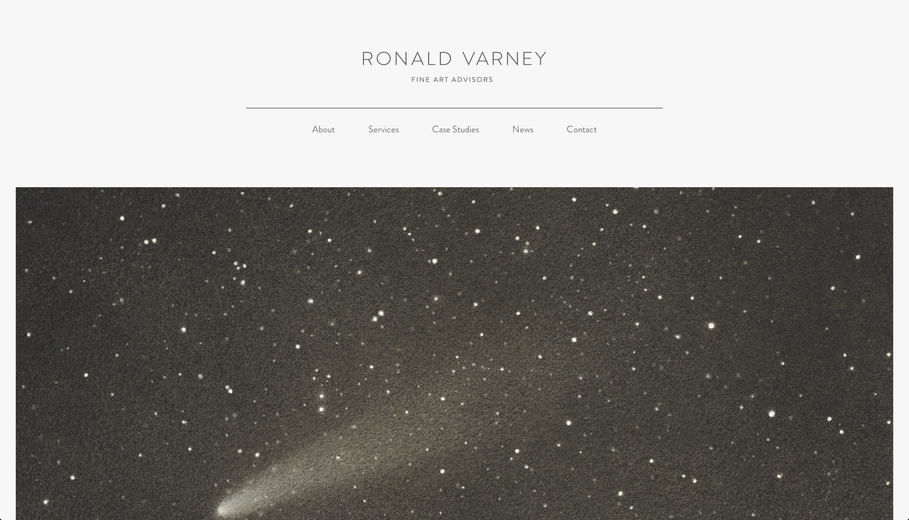
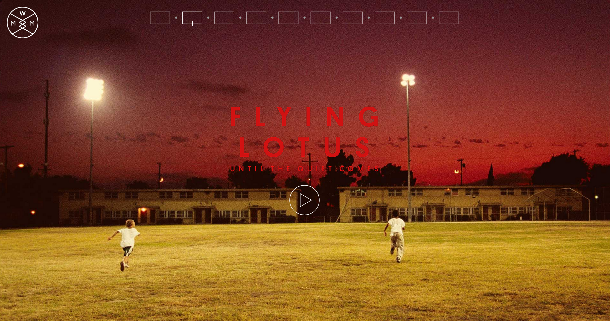
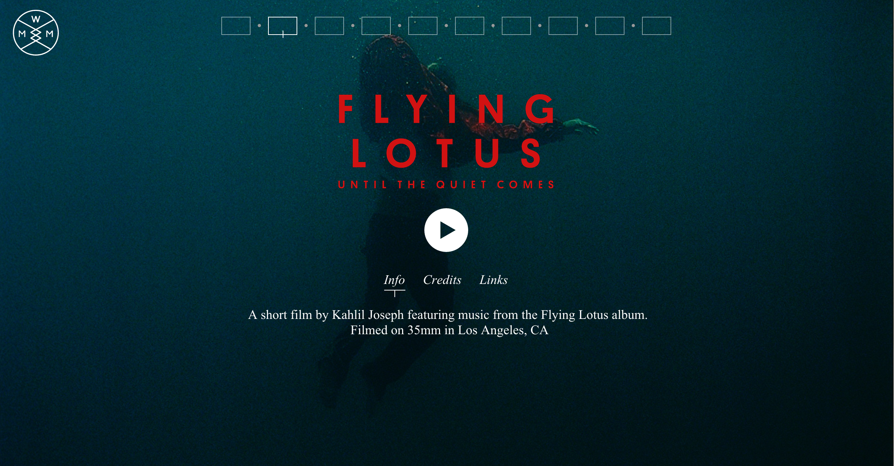
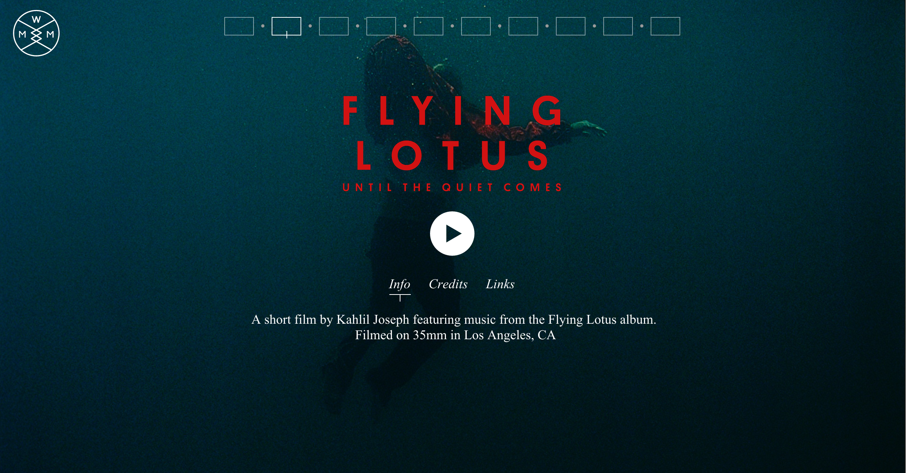

RCHOI
ALL ABOUT SIMPLICITY
It is great to have white background since the design scope becomes very broad and flexible. Sans serif typefaces are very modern. The thickness of the typeface is very significant because it could ruin all the modern look when it gets thicker.
ALL ABOUT HOVER
This website has hover effects going on everywhere. The overall design looks really simple and minimal. Typefaces and typography are treated nicely using different types of typefaces, still having clean design. But it draws audience's attention more has the hover effects come to the place. They do not bother audience at all, fast loading, straightforward on purposes of hover effects.

 
